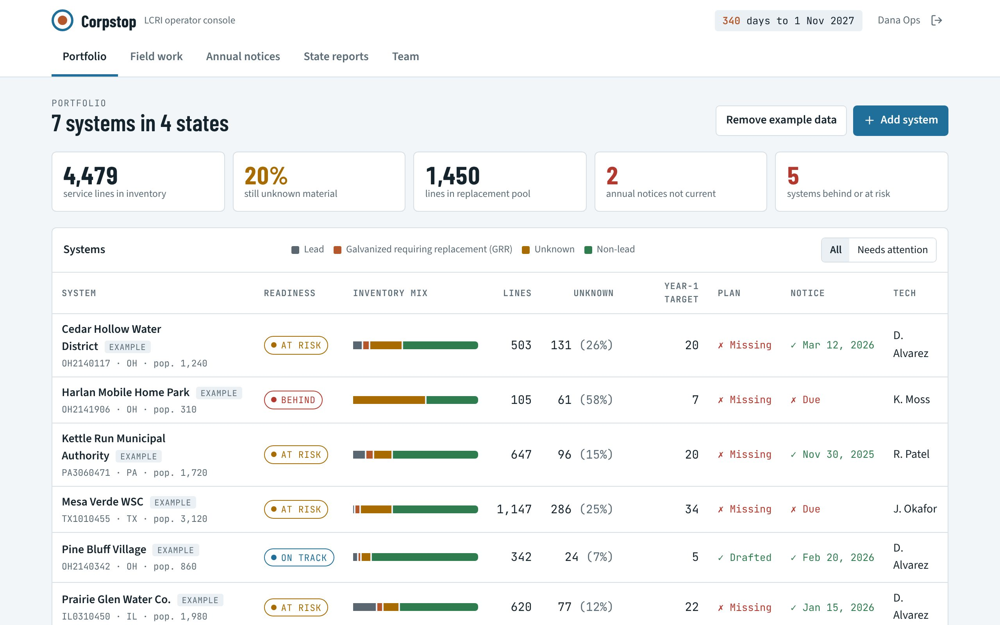
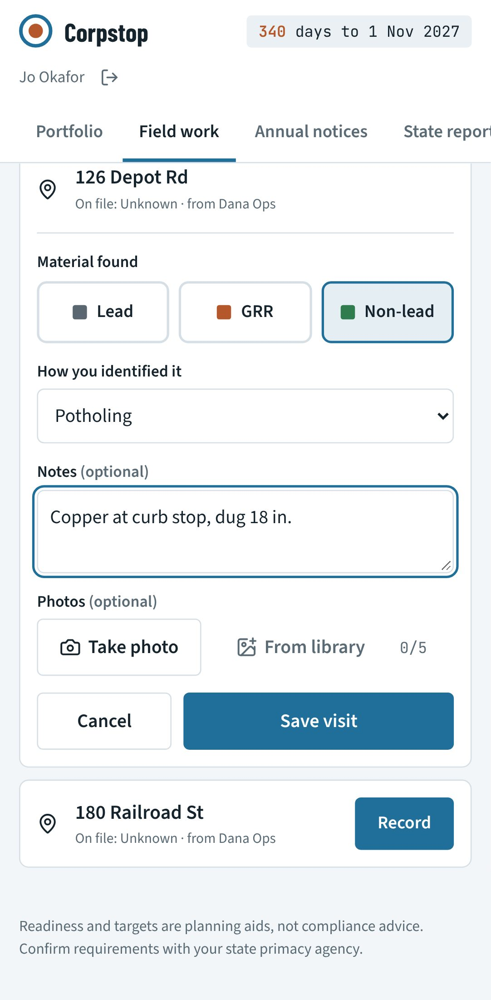

Every service line accounted for, in every system you run.
Corpstop is one console for getting a whole portfolio of small water systems ready for the 1 Nov 2027 LCRI compliance date, then keeping them there: inventories, field verification, annual notices and state filings.

The deadline is fixed. The work runs for ten years after it.
The Lead and Copper Rule Improvements (40 CFR 141 subpart I) apply to every community water system, including the small ones you operate.
Compliance date. Each system needs a baseline service-line inventory, including lead connectors, and a replacement plan.
Notices to every customer served by a lead, galvanized-requiring-replacement or unknown line.
Average replacement pace for lead and galvanized lines, over roughly ten years.
Built for the operator who runs many systems, not the utility that runs one.
See which systems are behind
Readiness for every system on one screen: material mix, share still unknown, year-one replacement target, plan and notice status.
Send techs to the unknown lines
Pick lines on a system and assign them. Techs record what they find on their phone; results appear in the office as they're saved.
Works in the basement
Visits save on the phone with no signal and upload on their own when the phone reconnects. Nothing gets typed twice.
Evidence for every line
Take photos with the in-app camera, up to five per visit. Stored privately and attached to the service line.
Annual notices in one batch
Pick the systems that are due, preview the letter with each system's details, and queue the batch.
Inventory exports by state
Systems grouped by state with what's ready to file and what's blocking it. Copy or download the CSV.
The office assigns. The tech records. Everyone sees it.
- Assign from the desktopTick unknown lines on a system and give them to a team member.
- Record on the phoneBig buttons for lead, galvanized or non-lead, how it was identified, notes and photos.
- Stays in syncDesktop and phone update within seconds of each other, and catch up after a dead zone.
- Counts move by themselvesEach identified line updates the system's inventory and its replacement target.

From a spreadsheet of systems to a filed inventory.
- Add your systemsEnter each system with its inventory totals, or start from the example data to look around.
- Invite your teamCreate a team for your company and share the invite code with office staff and field techs.
- Work the unknownsAssign unknown lines, record visits in the field, and watch readiness move.
- Notify and fileSend annual notices and export each state's inventory when it's ready.
Teams that look after many small systems.
Good to know
Does it work without cell signal?
Yes, once the app has been opened with signal. Assignments stay on the phone, and visits recorded with no signal upload automatically when it comes back.
Who can see our data?
Only people on your team. A personal account's systems are visible only to that person. Field photos are private files, opened through links that expire after ten minutes.
Is Corpstop compliance advice?
No. Readiness checks and targets are planning aids. Confirm requirements with your state primacy agency.
Do we need to install anything?
No. Corpstop runs in the browser on desktop and phone. Field techs can add it to their home screen.
Does it file with my state directly?
Not yet. It prepares each state's inventory as a CSV for you to submit. State-specific templates are on the roadmap.
Can techs take photos in the app?
Yes. The in-app camera takes up to five photos per visit, or techs can pick them from their photo library.
Know where every system stands before 1 Nov 2027.
Sign up, load the example data to look around, then add your own systems.